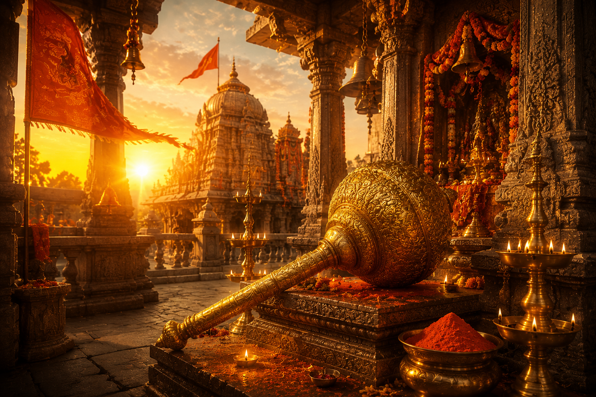

హనుమాన్ జన్మోత్సవం హిందూ ధర్మంలో అత్యంత పవిత్రమైన పర్వదినాలలో ఒకటి. ఈ రోజున శ్రీ ఆంజనేయ స్వామివారి జన్మదినాన్ని భక్తిశ్రద్ధలతో జరుపుకుంటారు. శ్రీరామునికి పరమభక్తుడిగా, అపార బలశాలిగా, జ్ఞానవంతుడిగా, వినయశీలిగా, చిరంజీవిగా శ్రీ హనుమంతుడు భారతీయ సంస్కృతిలో విశిష్ట స్థానాన్ని పొందాడు.
ఆంధ్రప్రదేశ్, తెలంగాణతో పాటు భారతదేశమంతటా ఉన్న ఆంజనేయ స్వామి దేవాలయాలలో ప్రత్యేక పూజలు, అభిషేకాలు, హనుమాన్ చాలీసా పారాయణం, సుందరకాండ పారాయణం మరియు అన్నదాన కార్యక్రమాలు నిర్వహించబడతాయి.
హనుమాన్ జన్మోత్సవం
భారతీయ మరియు తెలుగు సంప్రదాయ పర్వదినం

౧. పరిచయం
౨. పండుగ ప్రాముఖ్యత
హనుమాన్ జన్మోత్సవం భక్తి, సేవ, ధైర్యం, బలం, వినయం మరియు గురుభక్తికి ప్రతీకగా నిలుస్తుంది.
శ్రీ హనుమంతుడు తన జీవితమంతా శ్రీరామ సేవకే అంకితం చేశాడు. ఆయన భక్తి, నిస్వార్థ సేవ, అపారమైన శక్తి, జ్ఞానం ప్రతి మనిషికి ఆదర్శం. ఈ రోజున ఆంజనేయ స్వామిని ఆరాధించడం వల్ల ధైర్యం, ఆరోగ్యం, విజయాలు, శత్రుభయం తొలగి దైవానుగ్రహం లభిస్తుందని విశ్వసిస్తారు.
శ్రీ హనుమంతుడు తన జీవితమంతా శ్రీరామ సేవకే అంకితం చేశాడు. ఆయన భక్తి, నిస్వార్థ సేవ, అపారమైన శక్తి, జ్ఞానం ప్రతి మనిషికి ఆదర్శం. ఈ రోజున ఆంజనేయ స్వామిని ఆరాధించడం వల్ల ధైర్యం, ఆరోగ్యం, విజయాలు, శత్రుభయం తొలగి దైవానుగ్రహం లభిస్తుందని విశ్వసిస్తారు.
౩. శ్రీ హనుమంతుని అవతారం – పురాణ నేపథ్యం
వానరరాజు కేసరి మరియు అంజనా దేవికి వాయుదేవుని అనుగ్రహంతో శ్రీ హనుమంతుడు జన్మించాడు. అందువల్ల ఆయనను ఆంజనేయుడు, వాయుపుత్రుడు, మారుతి, కేసరినందనుడు అనే పేర్లతో కూడా పిలుస్తారు.
బాల్యంలో ఉదయిస్తున్న సూర్యుడిని పండుగా భావించి ఆకాశంలోకి ఎగిరి అందుకోవడానికి ప్రయత్నించినట్లు పురాణాలు పేర్కొంటాయి. ఈ సంఘటన ద్వారా ఆయన అసాధారణమైన శక్తి ప్రపంచానికి తెలిసింది.
తరువాత శ్రీరాముని సేవలో చేరి సీతాదేవిని వెతకడం, సముద్రాన్ని దాటడం, లంకను దహనం చేయడం, సంజీవని పర్వతాన్ని తీసుకురావడం వంటి అనేక దివ్య కార్యాలను నిర్వహించి శ్రీరాముని పరమభక్తుడిగా నిలిచాడు.
బాల్యంలో ఉదయిస్తున్న సూర్యుడిని పండుగా భావించి ఆకాశంలోకి ఎగిరి అందుకోవడానికి ప్రయత్నించినట్లు పురాణాలు పేర్కొంటాయి. ఈ సంఘటన ద్వారా ఆయన అసాధారణమైన శక్తి ప్రపంచానికి తెలిసింది.
తరువాత శ్రీరాముని సేవలో చేరి సీతాదేవిని వెతకడం, సముద్రాన్ని దాటడం, లంకను దహనం చేయడం, సంజీవని పర్వతాన్ని తీసుకురావడం వంటి అనేక దివ్య కార్యాలను నిర్వహించి శ్రీరాముని పరమభక్తుడిగా నిలిచాడు.
౪. చరిత్ర
హనుమాన్ జన్మోత్సవాన్ని శతాబ్దాలుగా భారతదేశవ్యాప్తంగా జరుపుకుంటున్నారు. రామాయణం, మహాభారతం, పురాణాలు మరియు భక్తి సాహిత్యంలో శ్రీ హనుమంతుని మహిమ విస్తృతంగా వర్ణించబడింది.
తెలుగు రాష్ట్రాలలో కొన్నిచోట్ల వైశాఖ బహుళ దశమి రోజున, మరికొన్ని ప్రాంతాలలో చైత్ర పౌర్ణమి రోజున హనుమాన్ జన్మోత్సవాన్ని నిర్వహించే సంప్రదాయం ఉంది.
తెలుగు రాష్ట్రాలలో కొన్నిచోట్ల వైశాఖ బహుళ దశమి రోజున, మరికొన్ని ప్రాంతాలలో చైత్ర పౌర్ణమి రోజున హనుమాన్ జన్మోత్సవాన్ని నిర్వహించే సంప్రదాయం ఉంది.
౫. హనుమాన్ జన్మోత్సవం ఎలా జరుపుకుంటారు
ఈ రోజున భక్తులు తెల్లవారుజామునే పవిత్ర స్నానం చేసి ఆంజనేయ స్వామిని దర్శించుకుంటారు.
సింధూరం, తమలపాకులు, వడమాలలు, వెన్న, బెల్లం, పండ్లతో ప్రత్యేక పూజలు నిర్వహిస్తారు. హనుమాన్ చాలీసా, సుందరకాండ, ఆంజనేయ దండకం మరియు శ్రీరామ నామాన్ని పారాయణం చేస్తారు.
అనేక దేవాలయాలలో మహాభిషేకాలు, ఊరేగింపులు, అన్నదాన కార్యక్రమాలు నిర్వహించబడతాయి.
సింధూరం, తమలపాకులు, వడమాలలు, వెన్న, బెల్లం, పండ్లతో ప్రత్యేక పూజలు నిర్వహిస్తారు. హనుమాన్ చాలీసా, సుందరకాండ, ఆంజనేయ దండకం మరియు శ్రీరామ నామాన్ని పారాయణం చేస్తారు.
అనేక దేవాలయాలలో మహాభిషేకాలు, ఊరేగింపులు, అన్నదాన కార్యక్రమాలు నిర్వహించబడతాయి.
౬. హనుమాన్ జన్మోత్సవం రోజున నిర్వహించే ప్రధాన ఆచారాలు
పవిత్ర స్నానం
ఆంజనేయ స్వామి అభిషేకం
సింధూరార్చన
వడమాల సమర్పణ
తమలపాకుల పూజ
హనుమాన్ చాలీసా పారాయణం
సుందరకాండ పారాయణం
శ్రీరామ నామ జపం
అన్నదానం
దానధర్మాలు
ఆంజనేయ స్వామి అభిషేకం
సింధూరార్చన
వడమాల సమర్పణ
తమలపాకుల పూజ
హనుమాన్ చాలీసా పారాయణం
సుందరకాండ పారాయణం
శ్రీరామ నామ జపం
అన్నదానం
దానధర్మాలు
౭. ప్రధానంగా ఎక్కడ జరుపుకుంటారు
కర్మంగాట్ ఆంజనేయ స్వామి దేవాలయం (హైదరాబాద్)
కొండగట్టు ఆంజనేయ స్వామి దేవాలయం (తెలంగాణ)
కసాపురం నెట్టికంటి ఆంజనేయ స్వామి దేవాలయం (ఆంధ్రప్రదేశ్)
నమక్కల్ ఆంజనేయ స్వామి దేవాలయం (తమిళనాడు)
హంపి యంత్రోద్ధారక ఆంజనేయ స్వామి ఆలయం (కర్ణాటక)
భారతదేశంలోని అన్ని ఆంజనేయ స్వామి దేవాలయాలు
కొండగట్టు ఆంజనేయ స్వామి దేవాలయం (తెలంగాణ)
కసాపురం నెట్టికంటి ఆంజనేయ స్వామి దేవాలయం (ఆంధ్రప్రదేశ్)
నమక్కల్ ఆంజనేయ స్వామి దేవాలయం (తమిళనాడు)
హంపి యంత్రోద్ధారక ఆంజనేయ స్వామి ఆలయం (కర్ణాటక)
భారతదేశంలోని అన్ని ఆంజనేయ స్వామి దేవాలయాలు
౮. ఆధ్యాత్మిక సందేశం
శ్రీ హనుమంతుని జీవితం నిస్వార్థ సేవ, అచంచల భక్తి, వినయం మరియు ధైర్యానికి ప్రతీక.
ఎంతటి శక్తి ఉన్నప్పటికీ అహంకారం లేకుండా జీవించడం, భగవంతుని సేవనే జీవిత లక్ష్యంగా భావించడం, కష్టకాలంలో ధైర్యాన్ని కోల్పోకుండా నిలబడడం హనుమంతుని జీవితంలోని గొప్ప సందేశాలు.
ఎంతటి శక్తి ఉన్నప్పటికీ అహంకారం లేకుండా జీవించడం, భగవంతుని సేవనే జీవిత లక్ష్యంగా భావించడం, కష్టకాలంలో ధైర్యాన్ని కోల్పోకుండా నిలబడడం హనుమంతుని జీవితంలోని గొప్ప సందేశాలు.
౯. ఆసక్తికర విషయాలు
శ్రీ హనుమంతుడు సప్త చిరంజీవులలో ఒకరిగా భావించబడుతాడు.
శ్రీరాముని ఉంగరాన్ని సీతాదేవికి అందించిన మహాభక్తుడు హనుమంతుడు.
సముద్రాన్ని ఒకే గెంతులో దాటిన వీరుడిగా రామాయణంలో వర్ణించబడాడు.
సంజీవని పర్వతాన్ని మోసుకొచ్చి లక్ష్మణుని ప్రాణాలను రక్షించాడు.
హనుమాన్ చాలీసా ప్రపంచంలో అత్యధికంగా పారాయణం చేయబడే స్తోత్రాలలో ఒకటి.
శ్రీరామ నామం వినిపించే ప్రతి చోట హనుమంతుడు అదృశ్యరూపంలో ఉంటాడని భక్తుల విశ్వాసం.
శ్రీరాముని ఉంగరాన్ని సీతాదేవికి అందించిన మహాభక్తుడు హనుమంతుడు.
సముద్రాన్ని ఒకే గెంతులో దాటిన వీరుడిగా రామాయణంలో వర్ణించబడాడు.
సంజీవని పర్వతాన్ని మోసుకొచ్చి లక్ష్మణుని ప్రాణాలను రక్షించాడు.
హనుమాన్ చాలీసా ప్రపంచంలో అత్యధికంగా పారాయణం చేయబడే స్తోత్రాలలో ఒకటి.
శ్రీరామ నామం వినిపించే ప్రతి చోట హనుమంతుడు అదృశ్యరూపంలో ఉంటాడని భక్తుల విశ్వాసం.
౧౦. హనుమాన్ జన్మోత్సవం రోజున చేయవలసిన ముఖ్యమైనవి
పవిత్ర స్నానం చేయాలి.
ఆంజనేయ స్వామిని దర్శించాలి.
హనుమాన్ చాలీసా పారాయణం చేయాలి.
సుందరకాండ చదవాలి.
శ్రీరామ నామాన్ని జపించాలి.
వడమాల లేదా తమలపాకులు సమర్పించాలి.
అన్నదానం చేయాలి.
పెద్దల ఆశీర్వాదం తీసుకోవాలి.
ధైర్యం, వినయం, సేవాభావాన్ని ఆచరించాలి.
ఆంజనేయ స్వామిని దర్శించాలి.
హనుమాన్ చాలీసా పారాయణం చేయాలి.
సుందరకాండ చదవాలి.
శ్రీరామ నామాన్ని జపించాలి.
వడమాల లేదా తమలపాకులు సమర్పించాలి.
అన్నదానం చేయాలి.
పెద్దల ఆశీర్వాదం తీసుకోవాలి.
ధైర్యం, వినయం, సేవాభావాన్ని ఆచరించాలి.
౧౧. ఆధారాలు
గ్రంథ ఆధారాలు
శ్రీమద్ వాల్మీకి రామాయణం
ఆధ్యాత్మ రామాయణం
ఆనంద రామాయణం
స్కాంద పురాణం
బ్రహ్మాండ పురాణం
ఇతర ఆధారాలు
ప్రముఖ ఆంజనేయ స్వామి దేవాలయాల ప్రచురణలు
భారతీయ ధార్మిక సంప్రదాయ గ్రంథాలు
శ్రీ హనుమత్ భక్తి సాహిత్యం
శ్రీమద్ వాల్మీకి రామాయణం
ఆధ్యాత్మ రామాయణం
ఆనంద రామాయణం
స్కాంద పురాణం
బ్రహ్మాండ పురాణం
ఇతర ఆధారాలు
ప్రముఖ ఆంజనేయ స్వామి దేవాలయాల ప్రచురణలు
భారతీయ ధార్మిక సంప్రదాయ గ్రంథాలు
శ్రీ హనుమత్ భక్తి సాహిత్యం
౧౨. ముగింపు
హనుమాన్ జన్మోత్సవం కేవలం శ్రీ ఆంజనేయ స్వామివారి జన్మదినం మాత్రమే కాదు; అది భక్తి, సేవ, ధైర్యం, బలం మరియు వినయానికి ప్రతీకగా నిలిచే మహత్తర పర్వదినం.
శ్రీ హనుమంతుని జీవితం ప్రతి భక్తునికి ఆదర్శప్రాయం. శ్రీరామునిపై ఆయనకున్న అచంచల భక్తి, నిస్వార్థ సేవాభావం మరియు అపారమైన ధైర్యం ప్రతి మనిషికి స్ఫూర్తినిస్తాయి.
"బలం, బుద్ధి, విద్యలను ప్రసాదించి, భక్తి మార్గంలో నడిపించే శ్రీ ఆంజనేయ స్వామివారి అనుగ్రహం ప్రతి ఒక్కరిపై ఎల్లప్పుడూ ఉండాలని కోరుకుందాం."
శ్రీ హనుమంతుని జీవితం ప్రతి భక్తునికి ఆదర్శప్రాయం. శ్రీరామునిపై ఆయనకున్న అచంచల భక్తి, నిస్వార్థ సేవాభావం మరియు అపారమైన ధైర్యం ప్రతి మనిషికి స్ఫూర్తినిస్తాయి.
"బలం, బుద్ధి, విద్యలను ప్రసాదించి, భక్తి మార్గంలో నడిపించే శ్రీ ఆంజనేయ స్వామివారి అనుగ్రహం ప్రతి ఒక్కరిపై ఎల్లప్పుడూ ఉండాలని కోరుకుందాం."
✦ సర్వే జనాః సుఖినో భవంతు ✦